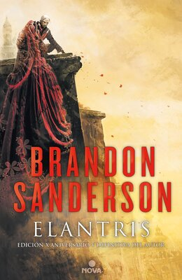
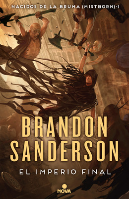
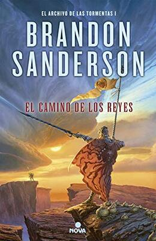
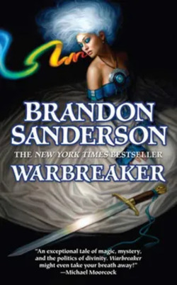

Elantris
Elantris es la primera novela publicada de Sanderson. La trama se desarrolla en la ciudad de Elantris, una ciudad que antiguamente era conocida por ser el hogar de dioses, pero que ahora está en ruinas.
Mistborn
Mistborn es una serie de novelas de fantasía épica. La trama se desarrolla en un mundo en el que las personas pueden ingerir metales para obtener poderes sobrenaturales.
El archivo de las tormentas
El archivo de las tormentas es una serie de novelas de fantasía épica. La trama se desarrolla en el mundo ficticio de Roshar, donde la magia se basa en el control de la tormenta.
Warbreaker
Warbreaker es una novela de fantasía independiente. La trama se desarrolla en el mundo ficticio de Nalthis, donde las personas pueden usar su aliento para otorgar vida a objetos inanimados.